SENSORY ARTISTIC
Statement del Artista
¿Cómo sueña la tecnología cuando es guiada por la sensibilidad y el corazón humano?
Como creador multidisciplinario bajo la filosofía de SENSORY ARTISTIC (senart), entiendo la tecnología no como un fin o un generador automático de algoritmos, sino como una extensión de los sentidos. Cada pieza en el "Universo EDUSSE" nace de una visión personal íntima —un recuerdo, un acorde de sonido, una emoción o un imposible arquitectónico— que moldeo y esculpo meticulosamente a través de un diálogo digital honesto.
En este viaje creativo, declaro con orgullo a mis verdaderos aliados de viaje: Antigravity, Copilot, Gemini y Flow. Juntos sumamos precisión técnica y estructura a mi intuición y corazón, demostrando que la tecnología es solo la herramienta, mientras que el arte sensorial es el único y verdadero propósito.
Esta selección invita al espectador a abrir ventanas de realidades alternativas, donde el postimpresionismo, la materia y el cubismo digital se funden en un solo lenguaje sin fronteras.
El Universo EDUSSE
Estilos y Conceptos Auditados
EXP NEOCIRC
Composición circular y emoción visualEstilo pictórico narrativo y envolvente basado en la energía circular, la pincelada expresiva y la emoción visual. Aporta la vertiente más luminosa y emocional.
CUBESSE
Cubismo digital y solidez geométricaConstrucción pictórica basada en geometría facetada y presencia sólida. Utiliza planos facetados y pinceladas tipo óleo impasto para una fuerte identidad estructural.
LINEART
Geometría minimalista y emocionalVórtice de línea minimalista que busca el equilibrio entre la forma y el vacío mediante un trazado vectorial de alta precisión y dinamismo.
IMPASTUS PAINT
El color como entidad físicaMateria y memoria. Emplea pinceladas densas con relieve táctil e impasto digital para celebrar la fuerza física y la profundidad de la pintura.
ESPATAC-EXTREME
Pintura al límite de la esculturaGrito matérico. Representa el límite físico del impasto donde la pintura se hace relieve tridimensional absoluto con sombras arrojadas reales.
NEBULÍNICO
Figuración disuelta y nieblaIdentidad de la niebla. Explora la disolución de las formas en atmósferas difusas con paletas gris-azuladas, acentos cálidos y surcos de espátula visibles.
49 ARTE CIBERNÉTICO
Fusión Cuántica y Entidades de LuzExploración visual de entidades cibernéticas y dimensiones cuánticas. Una colección curada de 20 obras que representan la vanguardia tecnológica y mística del Universo EDUSSE.
GASTRO-RELIEVE
Materia orgánica y volumen escultóricoEstilo artístico basado en imágenes tridimensionales utilizando exclusivamente ingredientes comestibles (miel, mantequilla, pimentón, semillas). El volumen se genera mediante acumulación física sobre soporte sólido.
NEO-FAUVE
Aquarelle-Découpé y síntesis cromáticaHomenaje directo a la libertad de Henri Matisse. Estilo ilustrativo vibrante que combina recortes de papel figurados y gouache digital, usando el color de forma independiente y emocional, liberado de la realidad descriptiva.
KINTSUGI-ORGÁNICO
Mármol clásico y exoesqueleto áureoFusión del hiperrealismo escultórico en mármol con estructuras paramétricas y corales de oro líquido. Representa la simbiosis entre la pureza clásica y la infección orgánica preciosa.
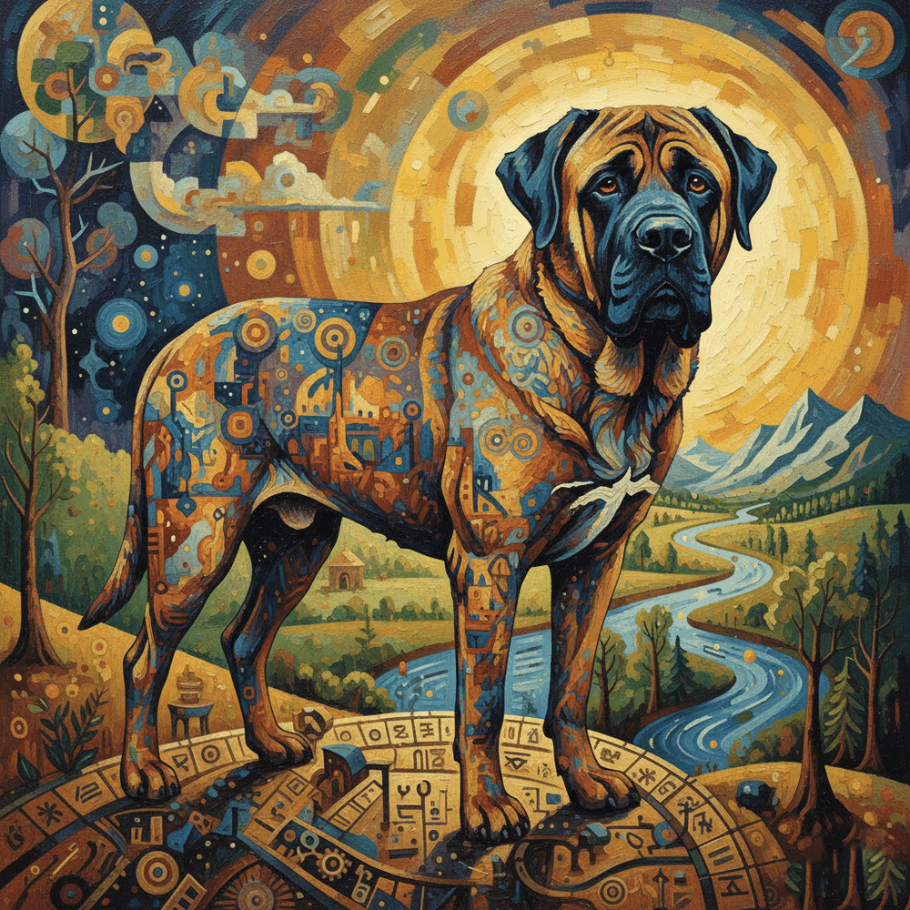
El Guardian Del Circuito Solar
Un mastín de mirada sabia y protectora cuya piel narra historias de paisajes olvidados. La lealtad absoluta en un entorno místico.
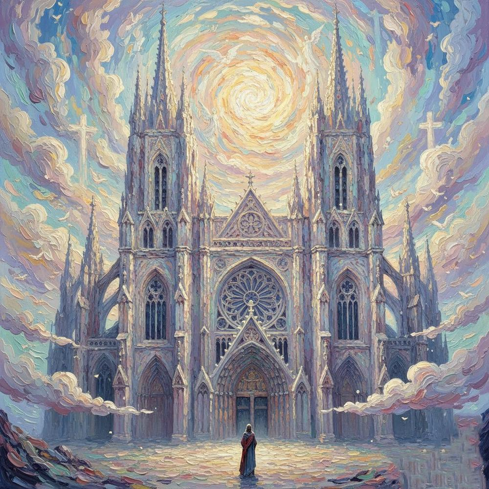
Catedral En Las Nubes
La conexión entre lo humano y lo divino. El estilo NEOCIRC respeta la verticalidad mientras el cielo se arremolina sobre el rosetón central.

Flotando como un colibri
El colibrí se descompone en un prisma de mil facetas, capturando el latido frenético contra un firmamento de fuego geométrico.
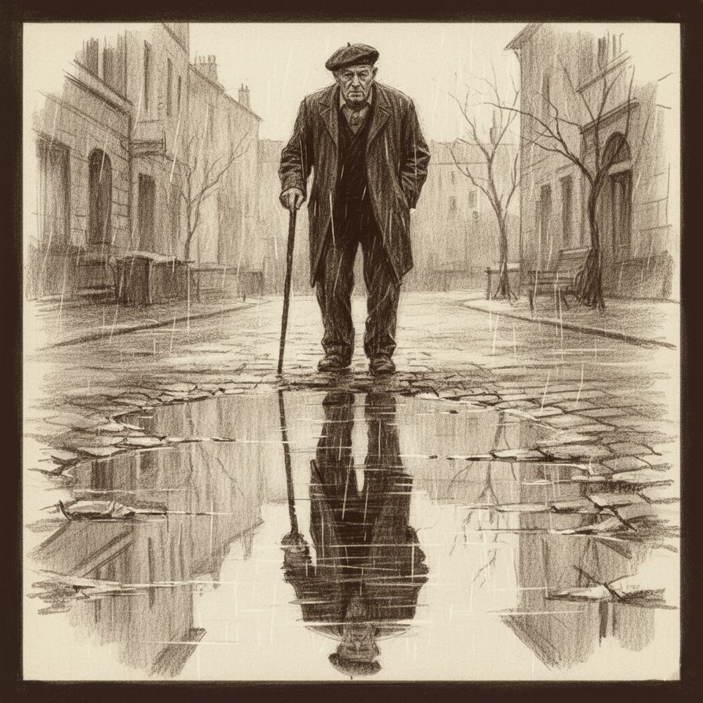
Abuelo Paseando Bajo La Lluvia
El eco de los pasos sobre el asfalto mojado resuena en esta pieza, donde la lluvia y la memoria se funden en el suave grano del carboncillo.
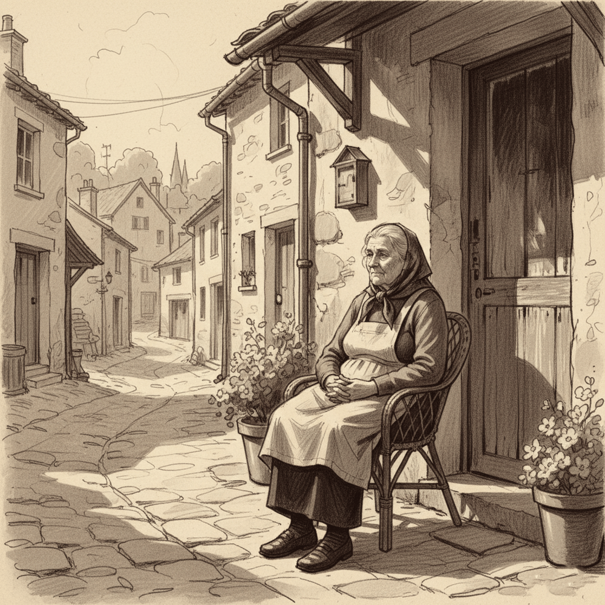
Señora sentada en la puerta de su casa
La espera silenciosa y la paz de la tarde se graban en la piedra, en un retrato que honra la dignidad del tiempo y la quietud del hogar.
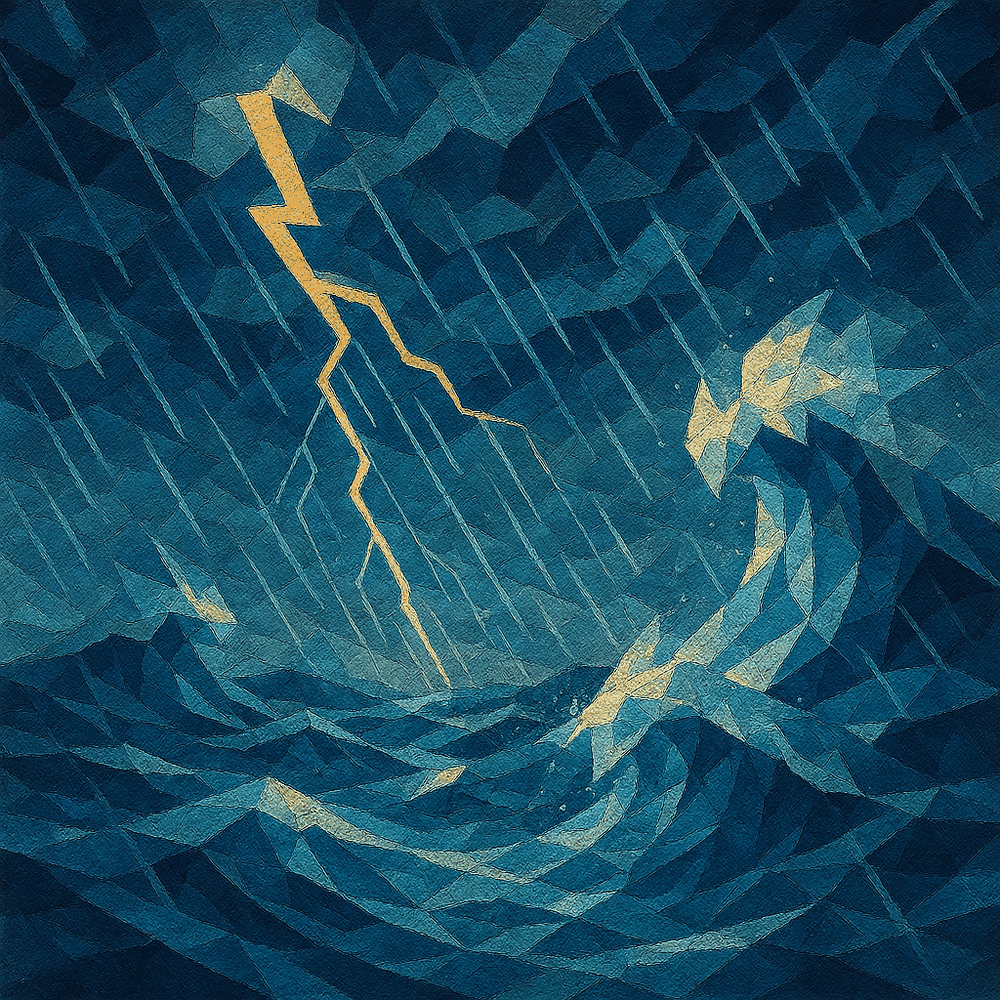
Trueno Y La Mar
La inmensidad del océano se convierte en espejo del subconsciente. La técnica realza la calma tensa y la majestuosidad de la marea.
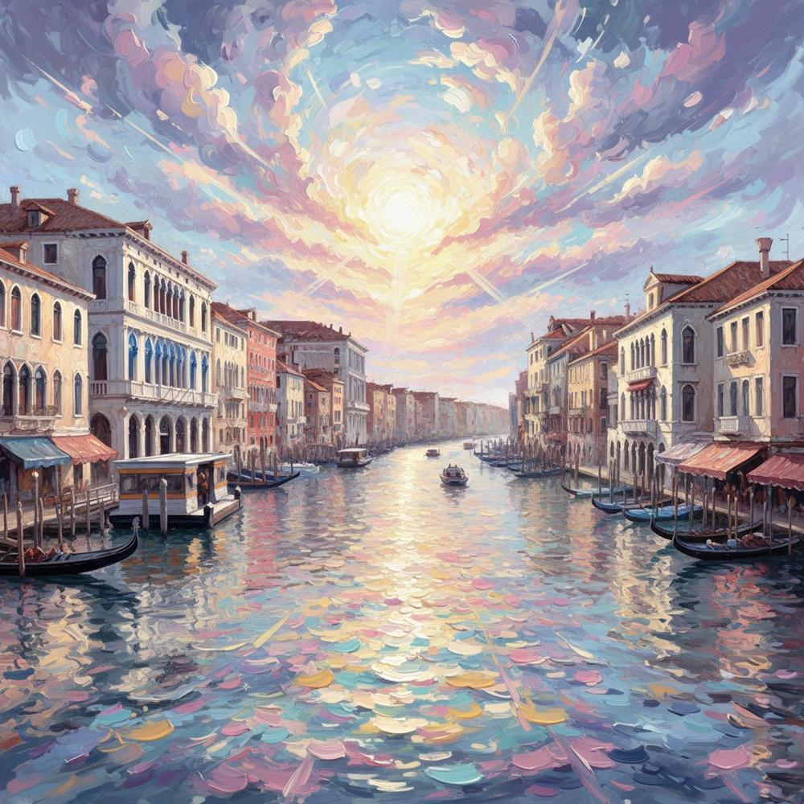
Venecia
Góndolas se deslizan por un canal de reflejos, donde los palacios venecianos sueñan en un mar de color cambiante.
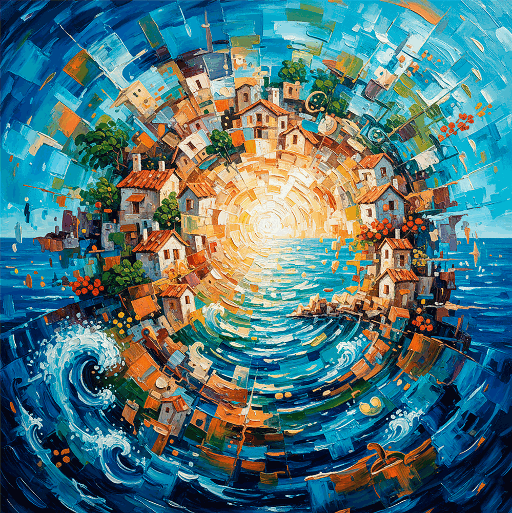
Abstracto fractal
Un mundo circular donde la metrópolis gira en torno a un sol central, creando una danza geométrica de barcos, casas y olas.
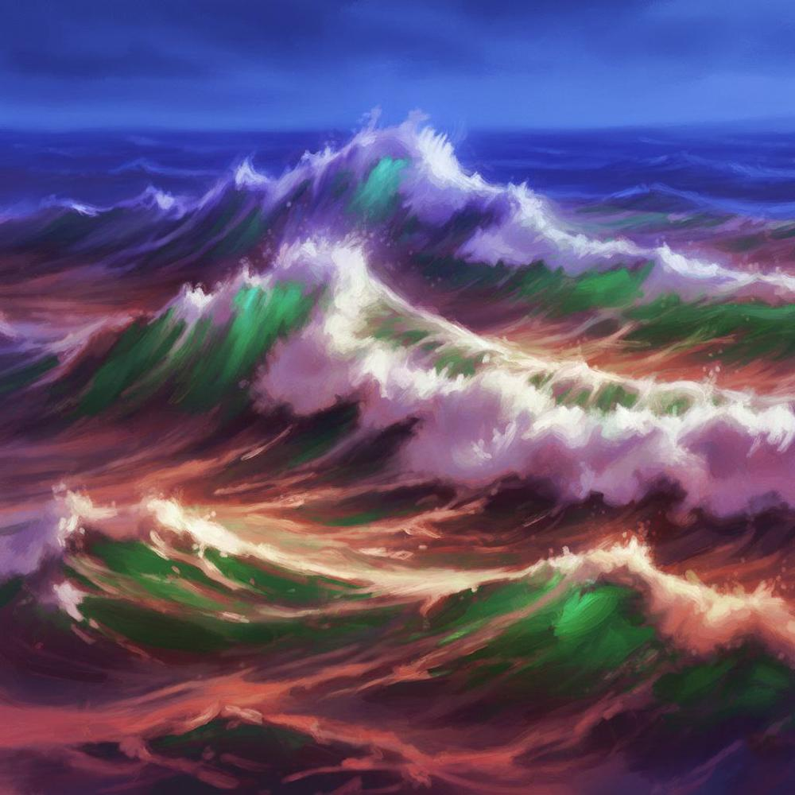
Mar Bravo
El rugido del océano convertido en bruma; un mar que azota la memoria con la fuerza de una tormenta de ensueño.

Aldea China
Serenidad milenaria; la vida respira en los tejados curvos y el silencio de las montañas, un refugio donde el tiempo fluye calmado.

Tormenta en Manhattan
La ciudad se rinde ante la materia. Una visión vibrante donde la pincelada densa captura la electricidad de una tormenta neoyorquina.

Chica Joven Posando
La esencia de la figura humana destilada en un laberinto de líneas. Una exploración minimalista sobre la elegancia del trazo puro.
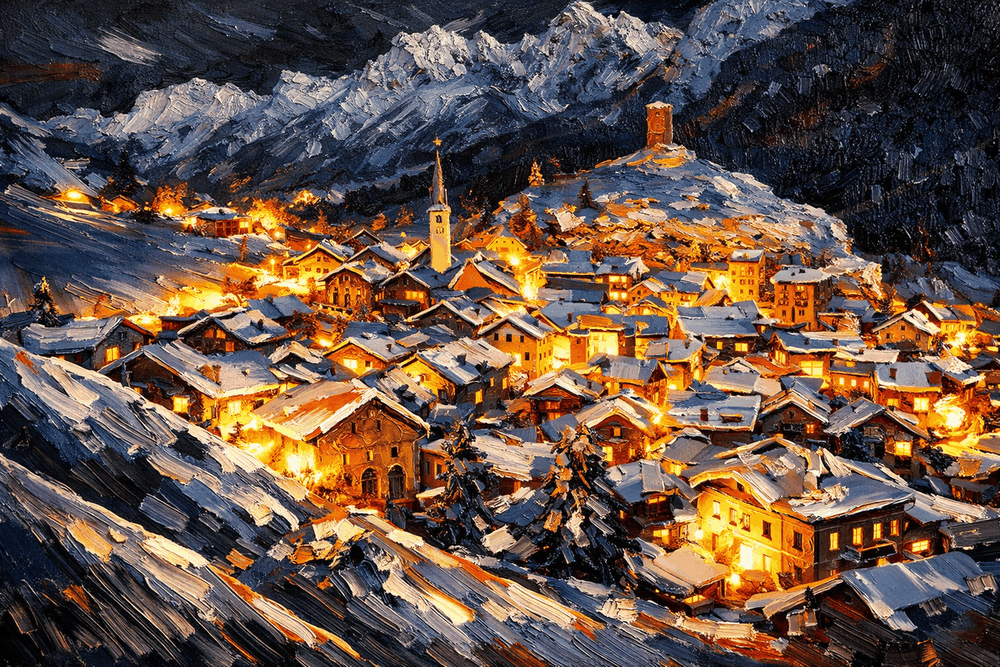
Ardez Switzerland
El paisaje suizo esculpido con espátula extrema, donde la piedra de las casas de la Engadina y las cumbres alpinas cobran una tridimensionalidad casi tectónica. La materia se convierte en memoria física de los Alpes.
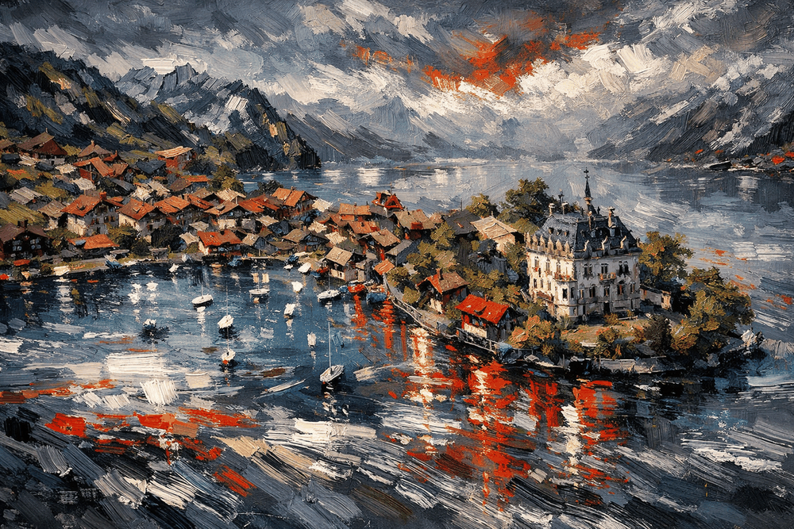
Iseltwald Switzerland
Un embarcadero legendario que se adentra en el turquesa profundo del lago alpino. El relieve matérico de la espátula esculpe el agua y los reflejos, transformando un paisaje clásico en una sinfonía de pura textura física.

Agathla Peak Arizona
La mística cumbre de Arizona emergiendo entre la bruma del desierto. El estilo NEBULÍNICO diluye los contornos de la roca sagrada, creando un surco visible que evoca la quietud del viento y el paso del tiempo.
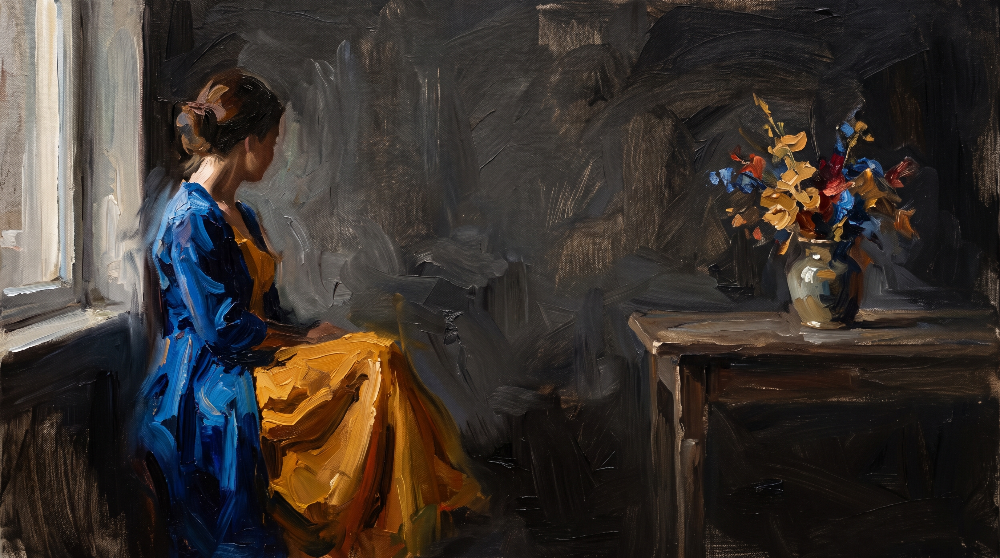
Mujer en la Habitación
Retrato íntimo y conmovedor en un espacio de recogimiento interior. La serie 57 STUCKEDU es una creación personalísima y entrañable de Eduardo Ramírez de Cartagena, donde la densidad plástica y la luz tamizada capturan la nostalgia, el silencio y la verdad de la mirada humana.
Colección de Autor — Tarifa Galería: 3.600,00 €€€
Espacios Singulares & Gran Formato
Para aquellos espacios que exigen una presencia monumental, disponemos de nuestra exclusiva colección B2B Magna.
Una selección de obras concebidas bajo estrictas ediciones limitadas y diseñadas específicamente para proyectos contract de alta gama: hoteles de lujo, vestíbulos corporativos, suites de prestigio y zonas comunes exclusivas.
Estas piezas destacan por su gran formato personalizable y la pureza de su acabado en calidad de museo.
A continuación, se muestra una selección exclusiva de piezas B2B Magna.

Pianista Mineral
Solemne interpretación musical arraigada en formaciones geológicas y vetas pétreas de la serie 56 NATURALEXSSE, conjugando resonancia acústica y solidez mineral en una pieza monumental concebida para espacios de alta arquitectura e interiorismo contract.
Edición Limitada — Tarifa Contract: 4.200,00 €
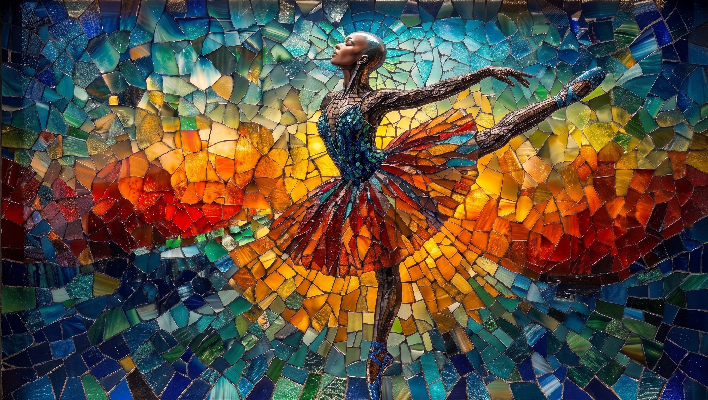
La Danza del Color
Composición magna en mosaico vítreo y teselas policromadas de alta refracción lumínica. La silueta etérea de una bailarina emerge de una espiral de cristales que transitan del azul cobalto y turquesa al fulgor dorado, ámbar y bermellón. Una obra monumental diseñada para vestíbulos de honor, salas de concierto y proyectos contract de alto standing.
Edición Limitada — Tarifa Contract: 8.800,00 €
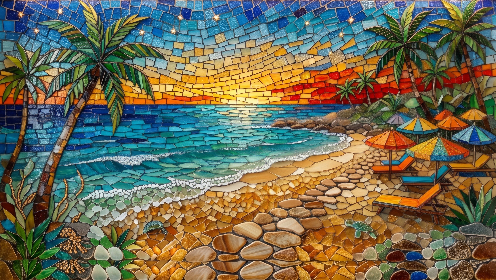
Paraíso Tropical
Paisaje monumental concebido en mosaico vítreo de inspiración bizantina y mediterránea. Palmeras estilizadas, orilla de cantos rodados y aguas turquesas convergen en un horizonte radiante al atardecer donde la luz del ocaso se descompone en miles de teselas translúcidas y cálidas. Pieza exclusiva orientada a resorts de gran lujo, suites presidenciales y espacios de relax arquitectónico.
Edición Limitada — Tarifa Contract: 8.600,00 €

Trilogía Argéntea
Obra exclusiva de la colección Magna B2B.
Edición Limitada — Tarifa Contract: 4.500,00 €

Burbble Memory
Obra exclusiva de la colección Magna B2B.
Edición Limitada — Tarifa Contract: 3.600,00 €€

Camino Empedrado
Obra exclusiva de la colección Magna B2B.
Edición Limitada — Tarifa Contract: 2.900,00 €

Indian Oceanica
Obra de gran formato exclusiva para proyectos de interiorismo de alto nivel y cadenas hoteleras de lujo.
Edición Limitada — Tarifa Contract: 6.000,00 €